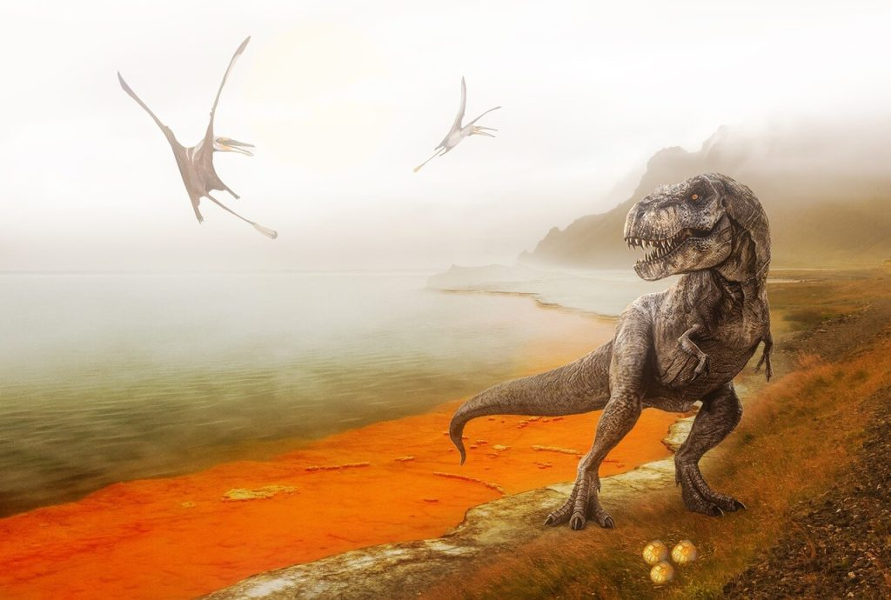

တိုင်ရန်နိုဆောရပ်စ် တွေဟာ လွန်ခဲ့တဲ့ နှစ်သန်း ၆၅ သန်း အချိန်က အသက်ရှင်သန် နေထိုင် ခဲ့ကြတာ ဖြစ်ပါတယ်။ သူတို့ဟာ ကြောက်မက်ဖွယ် သတ္တဝါ ကြီးတွေ ဖြစ်ကြပြီး အလွန် သန်မာတဲ့ မေးရိုးတွေနဲ့ အလွန် ချွန်မြတဲ့ သွားတွေကိုလဲ ပိုင်ဆိုင် ထားကြပါတယ်။
ဒါပေမယ့် တီရက်စ် တွေနဲ့ ပါတ်သက်လို့ ပဟေဠိ ဖြစ်နေရတာ တခု ရှိနေပါတယ်။ အဲ့ဒါကတော့ သူတို့ရဲ့ ဧရာမ ကိုယ်ခန္ဓာကြီးနဲ့ မလိုက်ဖက်အောင် အလွန် တိုတောင်းတဲ့ လက်တွေကို ပိုင်ဆိုင် ထားကြတာပဲ ဖြစ်ပါတယ်။
ဒီလို ကြီးမားတဲ့ ကိုယ်ခန္ဓာ ကြီးမှာ တိုတိုတုတ်တုတ် လက်ကလေးတွေ မြင်ရတာ နဲနဲတော့ အမြင်မတော် ဖြစ်နေပါတယ်။ ဒါဆို ဒီလို လက်တံတွေ တိုနေရတာ ဘာကြောင့် ဖြစ်နေရတာပါလဲ။ သိပ္ပံ ပညာရှင် တွေက ဘယ်လို ဖြေရှင်းချက် ထုတ်ပေး ထားကြ ပါသလဲ။
ပထမဆုံး T. rex တွေဟာ ဘယ်လောက်အထိ အရွယ်အစား ကြီးမားကြ သလဲဆိုတာ အရင် သိဖို့ လိုပါလိမ့်မယ်။T. rex တွေဟာ အလွန် အရွယ် ကြီးမားပြီး အရွယ်ရောက်ပြီး T. rex တကောင်ရဲ့ အလျားဟာ ပေ ၄၀ လောက်ထိ ရှည်လျားပါတယ်။ နောက်ပြီး အရွယ်ရောက်ပြီး T. rex တစ်ကောင်ရဲ့ အလေးချိန်ဟာ ဆိုရင်လဲ ၉ တန် လောက်အထိ လေးလံ ကြပါတယ်။ ဒါဟာ လူစီးကားလေး ၃ စီစာလောက် လေးတဲ့ အလေးချိန် ဖြစ်ပါတယ်။
ဒီလောက် ကြီးမားတဲ့ ကိုယ်ခန္ဓာကြီး ပိုင်ဆိုင်ထားတာမို့ T. rex တွေဟာ အသက်ရှင်သန် နိုင်ဖို့ဆို များပြားလှတဲ့ အစားအစာ တွေကို စားသုံးဖို့ လိုအပ်ပါတယ်။ တနည်းအားဖြင့် သူတို့ရဲ့ နေ့စဉ် အဟာရ လိုအပ်ချက်ဟာ အလွန်ပဲ များပါတယ်။
T. rex တွေဟာ အသားစား သတ္တဝါ တွေပါ။ ဒီတော့ သူတို့ အစာအတွက် အခြား ဒိုင်နိုဆော တွေနဲ့ သတ္တဝါ တွေကို ဖမ်းယူ စားသုံး ကြရပါတယ်။
ဒီနေရာမှာ T. rex အစာရှာဖို့ အခြား အကောင်တွေကို သူတို့ရဲ့ လက်တွေနဲ့ ဖမ်းပြီး စားသောက်တာမျိုးကို မျက်စေ့ထဲ မြင်ယောင်မိ ကြမှာ ဖြစ်ပါတယ်။ ဒီလို သားကောင်တွေကို လက်နဲ့ ဖမ်းယူနိုင်ဖို့ဆိုရင် သန်မာပြီး ရှည်လျားတဲ့ လက်တံတွေကို ပိုင်ဆိုင်ဖို့ လိုအပ်မယ်လို့ ယူဆစရာ ဖြစ်နေပါတယ်။
ဒါပေမယ့် သိပ္ပံ ပညာရှင် တွေရဲ့ သုတေသန တွေ့ရှိချက် တွေအရ T. rex ဟာ သူတို့ရဲ့ သားကောင်ကို ဖမ်းယူဖို့ သန်မာပြီး ရှည်လျားတဲ့ လက်တွေ မလိုအပ်ဘူး ဆိုတာ သိလာရပါတယ်။ တကယ်တမ်း မှာလဲ T. rex ရဲ့ လက်တံတွေက တိုတို လေးတွေပါ။ ဒါဆို T. rex တွေရဲ့ လက်တွေဟာ ဘာ့ကြောင့် တိုနေရတာလဲ။

ဆင့်ကဲဖြစ်စဉ်ရဲ့အကျိုးဆက်
သိပ္ပံ ပညာရှင် အများစု လက်ခံထားတဲ့ သီအိုရီ တစ်ခုကတော့ သူတို့ဟာ သူတို့ရဲ့ လက်တွေကို သားကောင် ဖမ်းယူ ရာမှာ ဖြစ်စေ၊ မိမိကိုယ်ကို မိမိ ခုခံကာကွယ်ရာမှာ ဖြစ်စေ လိုအပ်မှု မရှိတော့တဲ့ အတွက်ကြောင့် ဖြစ်တယ်ဆိုတဲ့ အယူအဆ ပဲ ဖြစ်ပါတယ်။အရင်ကတော့ T. rex တွေမှာ ရှည်လျားတဲ့ လက်တွေ ရှိခဲ့ပါလိမ့်မယ်။ ဒါပေမယ့် သူတို့ရဲ့ သန်မာတဲ့ မေးရိုးတွေရဲ့ ကိုက်ခဲနိုင်စွမ်းကြောင့် T. rex တွေဟာ အစာ ရှာဖွေရာမှာဖြစ်စေ၊ ရန်သူနဲ့ တိုက်ခိုက်ရာမှာ ဖြစ်စေ လက်တွေကို အသုံးပြုစရာ မလိုတော့ ပါဘူး။
ဒီတော့ ဆင့်ကဲ ဖြစ်စဉ် (Evolution) အရ သူတို့ရဲ့ လက်တွေဟာ သိပ်ပြီး အသုံး မဝင် တော့ပါဘူး။ ဒါ့ကြောင့်လဲ အသုံးမဝင်တော့တဲ့ လက်တွေဟာ အသုံးပြုမှု မရှိတာကြောင့် မျိုးဆက်များစွာ ကြာတဲ့ အခါမှာ တဖြည်းဖြည်း တိုဝင်သွားတာ ဖြစ်ပါတယ်။
ဒီ သီအိုရီကို လက်တွေ့ မြေပြင်က တွေ့ရှိ ချက်တွေကလဲ ထောက်ခံ နေပါတယ်။ ဥပမာ T. rex တွေရဲ့ လည်ပင်းကြွက်သား တွေဟာ အခြား ဒိုင်နိုဆော တွေနဲ့ ယှဉ်ရင် ထူးထူးခြားခြား သန်မာနေ ကြပါတယ်။ ဒီ သန်မာတဲ့ ကြွက်သားတွေကြောင့် သူတို့ရဲ့ ကိုက်ခဲမှုဟာလဲ အလွန် အားကောင်းကြမယ်လို့ ခန့်မှန်းလို့ ရပါတယ်။ ဒီတော့ သားကောင်ကို လွန်ထွက်မသွားအောင် ကိုက်ခဲထားတာပဲ ဖြစ်ဖြစ်၊ အရိုးတွေ ခြေမွ ပြီး အသားတွေ ဖဲ့ထွင်ရာ မှာပဲ ဖြစ်ဖြစ် အလွယ်တကူပဲ ခြေမွနိုင်မှာ ဖြစ်ပါတယ်။
နောက်ပြီး T. rex တွေရဲ့ မေးရိုးကလဲ လွှသွားလို ခွန်မြနေ ကြပါတယ်။ ဒီ သွားတွေဟာ သားကောင်ရဲ့ ထူထဲတဲ့ အရေပြားကို အလွယ်တကူပြ ဆုတ်ဖြဲ ပစ်လိုက်နိုင်စွမ်းမှာ ဖြစ်ပါတယ်။ ဒီတော့ T. rex ရဲ့ ရှေ့လက် တွေရဲ့ အခန်းကဏ္ဍ ဟာလဲ မှေးမှိန်သွားမှာ ဖြစ်ပါတယ်။
စွမ်းအင်ခြွေတာမှု
နောက် သီအိုရီ တစ်ခုကတော့ ဒီလို လက်တံ တိုတိုလေးတွေ ရှိတာဟာ စွမ်းအင်ကို ခြွေတာရာ ရောက်တယ်ဆိုတဲ့ အယူအဆပဲ ဖြစ်ပါတယ်။ကြီးမားပြီး ကြွက်သားတွေ အထပ်ထပ်နဲ့ ဖွဲ့စည်းထားတဲ့ လက်တွေဟာ စွမ်းအင် လိုအပ်ချက်လဲ များမှာ ဖြစ်ပါတယ်။ ဒါပေမယ့် T. rex ကိုယ်နှိုက်က အစာလိုအပ်ချက် များတဲ့ ဒိုင်နိုဆောတွေ ဖြစ်နေပြန်ပါတယ်။ ဒီတော့ လက်တံ တိုလေးတွေပဲ ရှိတဲ့ အခါ လက်အတွက် သုံးရမယ့် စွမ်းအင်ကို ခြွေတာလိုက် နိုင်တာပဲ ဖြစ်ပါတယ်။ ဒီအစား ပိုလျံလာတဲ့ စွမ်းအင်ကို အခြား အရေးပါတဲ့ အင်္ဂါတွေ အတွက် အသုံးပြုလို့ ရလာပါတယ်။
မိတ်လိုက်ဖက်ရွေးချယ်မှု
နောက်တတိယ သီအိုရီ ကတော့ မိတ်ဖက်ဖေါ် ရွေးချယ်မှုကြောင့် ဆိုတဲ့ သီအိုရီပဲ ဖြစ်ပါတယ်။ ဒီ သီအိုရီ အရ လက်တံတိုတဲ့ ဒိုင်နိုဆော အထီးတွေဟာ လက်တံရှည်တဲ့ T. rex တွေထက် အမတွေကို ပိုပြီး ဆွဲဆောင်နိုင်စွမ်း ရှိတယ် ဆိုတဲ့ သီအိုရီပဲ ဖြစ်ပါတယ်။ဒီလို လက်တံတိုတဲ့ T. rex တွေက ပိုပြီး ဆွဲဆောင်နိုင်စွမ်း ကောင်းတာမို့ သူတို့ဟာ မိတ်ဖက်ဖေါ်လဲ ပိုပြီး ရဖို့ လွယ်ကူ လာပါတယ်။ ဒီတော့ လက်တံတို ဒိုင်နိုဆောတွေက မျိုးပွားနိုင်စွမ်း ပိုများပြီး လက်တံရှည် T. rex တွေကတော့ တဖြည်းဖြည်း အရေအတွက် လျော့နည်း လာကာ မျိုးတုန်း သွားကြပါမယ်။
ဒီဖြစ်စဉ်ရဲ့ ရလဒ်ကတော့ မျိုးဆက်များစွာ အကြာမှာ T. rex တွေရဲ့ ရှေ့လက်တံတွေ တိုသွား ကြတာပဲ ဖြစ်ပါတယ်။
ဒီ သီအိုရီဟာ စိတ်ဝင်စားစရာ ကောင်းပေမယ့် ပညာရှင်တွေ အကြားမှာတော့ သိပ်ပြီး လူကြိုက် မများ ကြပါဘူး။ ဒီ သီအိုရီကို ထောက်ခံတဲ့ သုတေသန အထောက်အထားလဲ သိပ်ပြီး များများစားစား မရှိပါဘူး။ နောက်ပြီး အခြား လက်တံတိုတဲ့ ဒိုင်နိုဆော မျိုးနွယ်တွေ မှာလဲ ဒီသီအိုရီက ပြောသလို ဆွဲဆောင်မှု အားကောင်းစေတယ် ဆိုတဲ့ လက္ခဏာ မတွေ့ရ ပါဘူး။
အချုပ်အားဖြင့် ပြောရမယ်ဆို T. rex ရဲ့ တိုတောင်းတဲ့ လက်တံတွေဟာ စိတ်ဝင်စားဖွယ် ကောင်းနေပေမယ့် သူတို့ရဲ့ လုပ်ငန်း ဆောင်တာနဲ့ ပါတ်သက်လို့တော့ ဘာမှ တိတိကျကျ သိရှိကြခြင်း မရှိ သေးပါဘူး။ ဘာလို့ ဒီလို လက်တံ တိုတိုလေး ဖြစ်နေရတာလဲ ဆိုတာနဲ့ ပါတ်သက်လို့လဲ သီအိုရီ အမျိုးမျိုး ကွဲပြားနေဆဲပါ။ ဒီ ပဟေဠိဟာ သိပ္ပံ ပညာရှင် တွေကို ဆက်လက်ပြီး အာရုံဖမ်းစား နေအုံးမှာ ဖြစ်ပါတယ်။